The impressive holiday issue of the New York Review of Books arrived the other day at 103 pages, with copious full-color advertisements, mainly from publishers, and articles assessing top-tier political and economic bestsellers as well as new books about classical culture. The Review is a phenomenon in the media landscape. Nearing the 50-year mark, its circulation has climbed to a record high of 140,000. It is edited, as it has been since its first issue of February 1, 1963 , by Robert B. Silvers, whose skill at matching subjects and writers is complemented by his mastery of the editing craft. Silvers shared editorial leadership with until 2006, when she died of cancer at 77. From all accounts they were a perfect pair.
Silvers, who is now past 80, continues to set standards for the Review with a freshness of perspective that is a major reason for the publication's appeal. In this era of Facebook, Twitter, and blogs, the Review has a website that holds its own with other magazines of ideas and commentary, but what is most striking is how traditional the Review is in so many ways. Looking back over the decades at cover subjects and illustrations available online, the look and feel of the Review is consistent, which is a tribute to its founding vision and the quiet self-confidence of its proprietor since 1984, Rea Hederman. There are 20 issues a year, containing about 20 articles, each of which is meant to be a thorough appraisal of the subject under consideration. Hederman has guided the publication's business interests—which including a book-publishing division, NYRB, and The Reader's Catalog—with a steady focus on profitability that is intended solely to support the commitment to quality he made when he acquired the Review for about $5 million from Silvers, Epstein, and her former husband, the publisher Jason Epstein, as well as a handful of other investors.
Hederman, whose family owned the Jackson, Mississippi Clarion-Ledger, is the ideal steward for the Review. As editor of the Clarion-Ledger, Hederman broke with its long-standing pro-segregation policies. And when he purchased the Review, Hederman pledged never to interfere with its editorial content. In a rare profile in the New York Observer, in 2006, Hederman described his breach with his family: "The thing that informed me mostly was that they were always trying to interfere in stories that we were publishing. It just drove me crazy. You have to have to have editorial independence. Otherwise your life is misery."
There is a wonderful summary in the Observer of Hederman's approach to the Review related by Victor Navasky, who was the longtime publisher of the Nation and is now the Delacorte Professor at Columbia's Graduate School of Journalism. Navasky invited Hederman to speak at a workshop at Harvard's Kennedy School. A student asked Hederman to describe his goals as a publisher. "He said that it was to make more money so that Bob Silvers and Barbara Epstein would have more resources at their disposal to put toward their writers," Navasky said; "That to me is so beautiful and clear, it's so spot-on and it's so unusual, that it's a model. It's extraordinary. And it helps explain the success of their enterprise."
This has been an especially good fall for the Review. In the holiday issue, dated December 22, Silvers and his editorial team combine topical subjects such as Michael Tomasky's entertaining profile drawn from This Is Herman Cain!: My Journey to the White House with pieces about Shakespeare, Polish poems, and the drawings of Watteau on display in London. Among the articles in the December 8 issue are reviews of The Swerve: How the World Became Modern by Stephen Greenblatt , which was the winner of this year's National Book Award for nonfiction, the major new biography of George F. Kennan by John Lewis Gaddis, 1Q84 by Haruki Murakami, and the entire literary output of the late Spalding Gray. In the November 24 issue there is a review of Joan Didion's Blue Nights, contributions by Gary Wills, Robert Darnton, and William Pfaff, and an essay by Paul Volcker, "Financial Reform: Unfinished Business," based on this year's William Taylor Memorial Lecture.
There is so much to read in the New York Review of Books, and so much of it shapes our most sophisticated public discourse that keeping up with it can be intimidating. I'm told that Silvers maintains his extraordinary pace by taking advantage of a sleeping loft in the Review's Hudson Street offices. From 1963 to 1997, the Review was based in the Fisk Building on 57th Street and Broadway, in the space that PublicAffairs now occupies. The building management regarded Silvers and Epstein with awe because of their relentless round-the-clock schedule and the unique accumulation of books, galleys, and manuscripts that filled the premises to overflowing. When PublicAffairs moved in, we hung a small plaque marking with pride the years the Review spent in the building. Given Silvers' longevity at the helm, there is speculation about succession. The last time the subject was publicly raised with him was in 2007 . "It's not a question that is posing itself," Silvers responded, and went back to work.
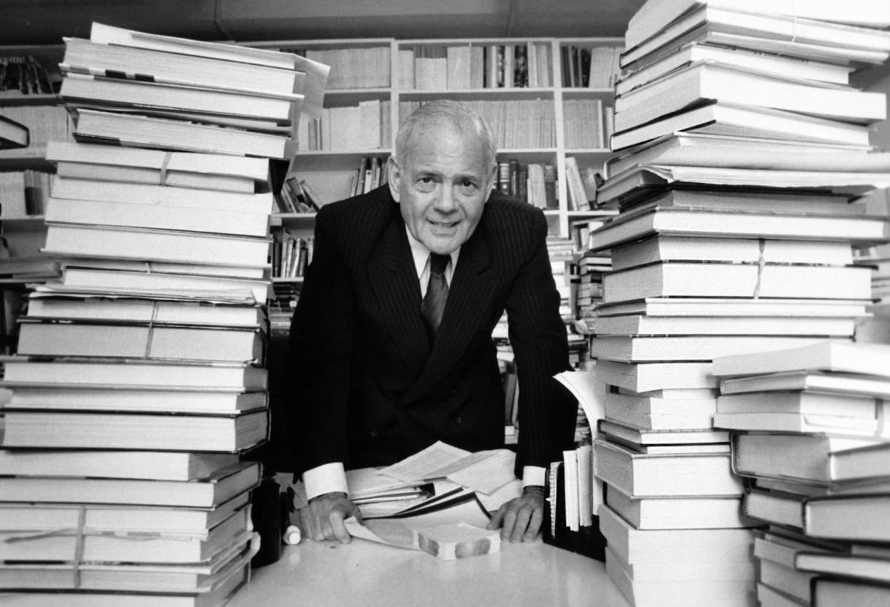 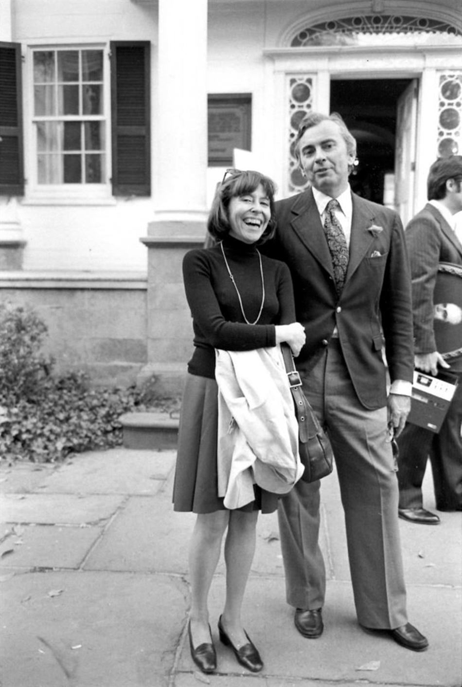 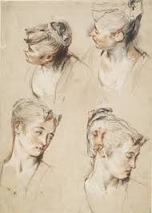
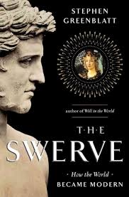
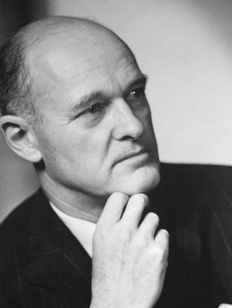
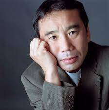
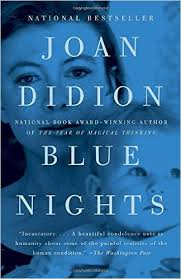
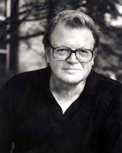
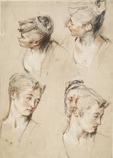
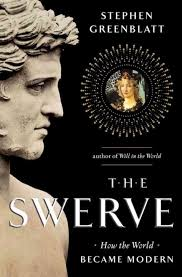
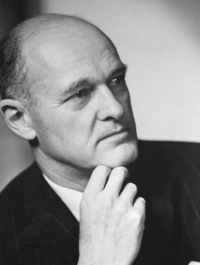
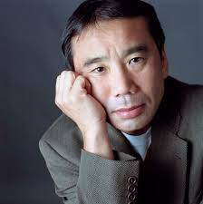
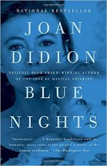
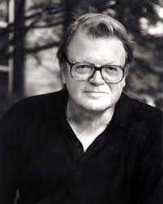